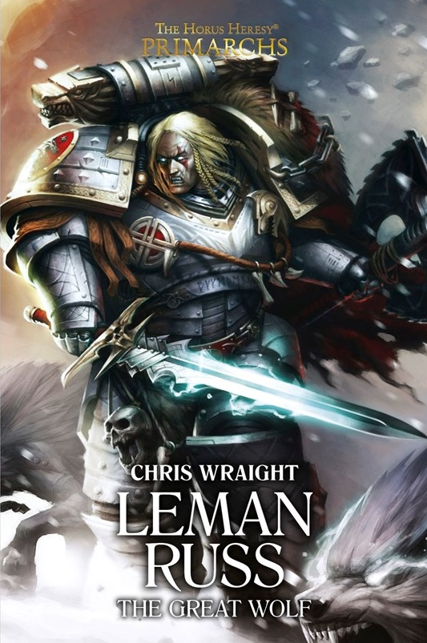

LEMAN RUSS: THE GREAT WOLF

Author: Chris Wraight
Format: Novel
The Space Wolves and Dark Angels fight together to bring Dulan into compliance, but Russ and Lion El'Jonson disagree over how to deal with its ruler. The tension between brothers threatens their campaign.
Introduction reviewed against Black Library’s description on 2026-09-27. The publisher page may contain spoilers.
Publication facts: publisher source, checked 2026-09-26.
Open this work in the interactive Archive to track reading progress and explore related works.